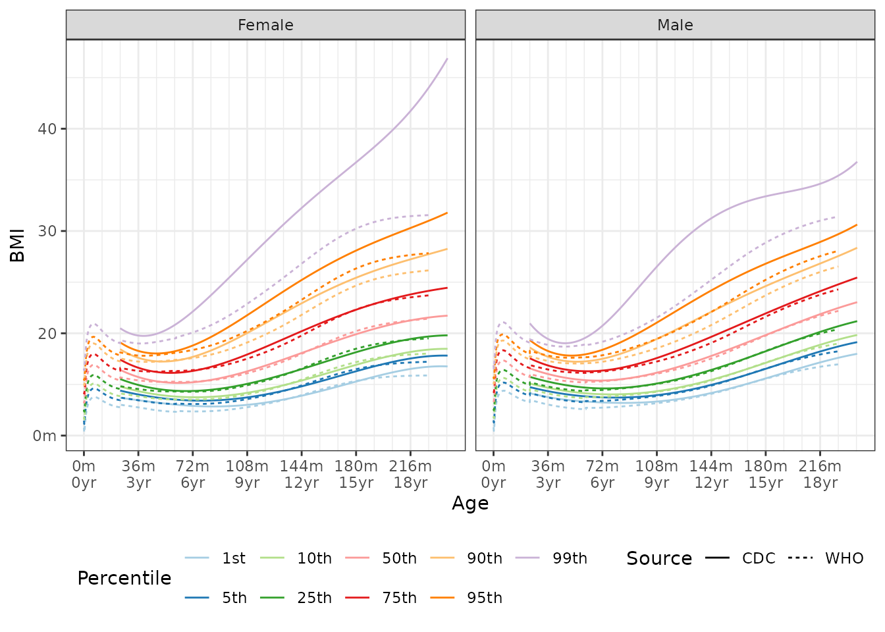
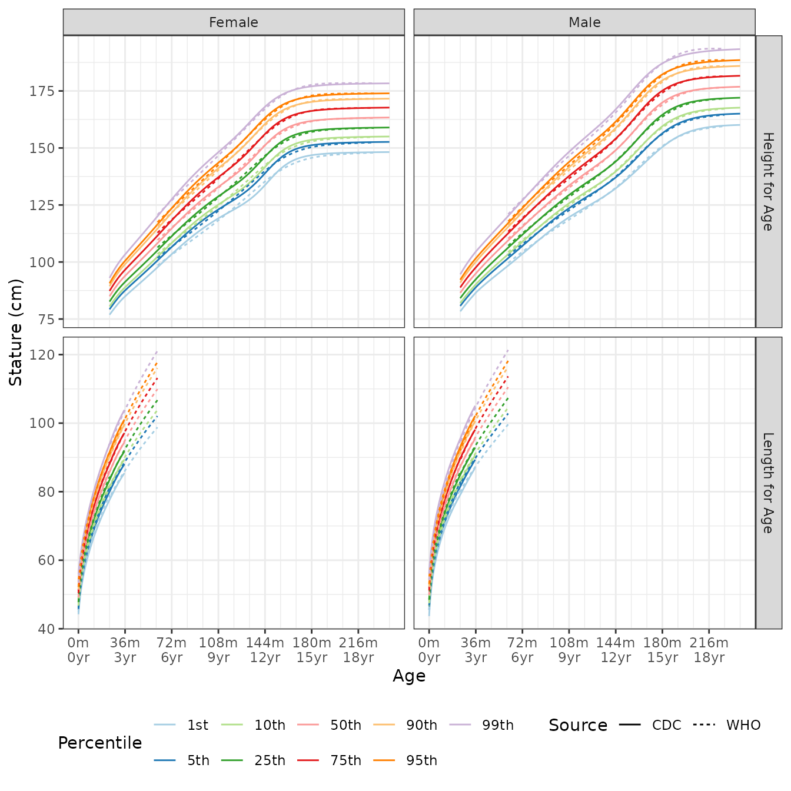
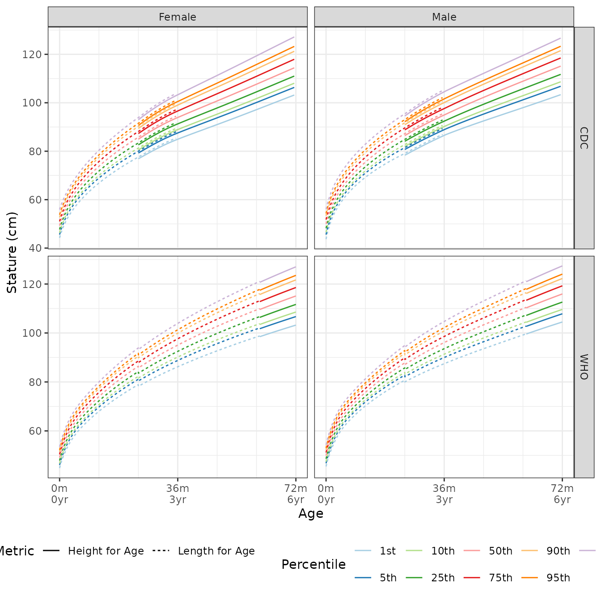
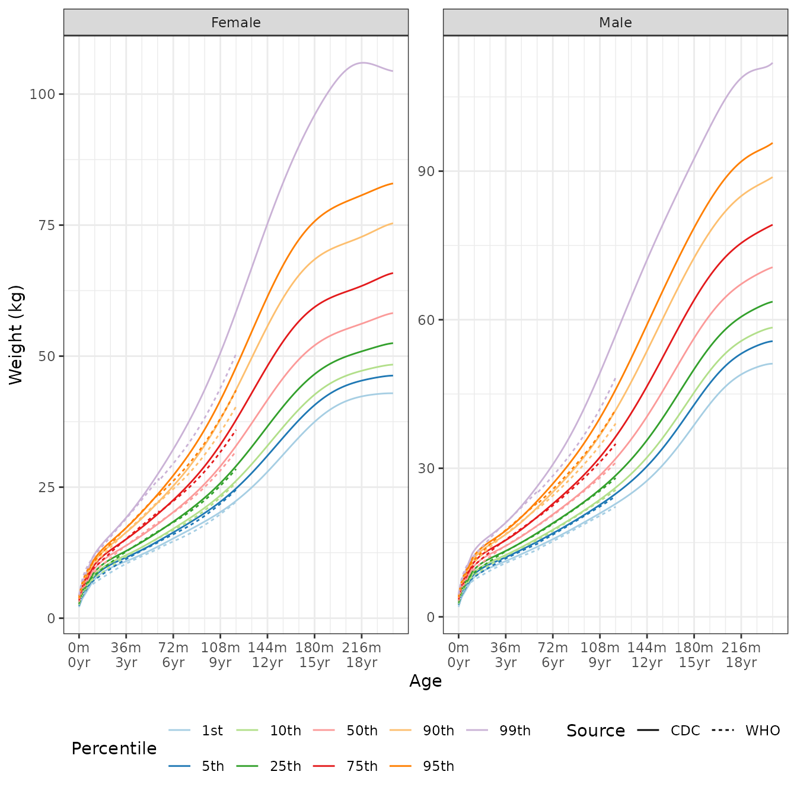
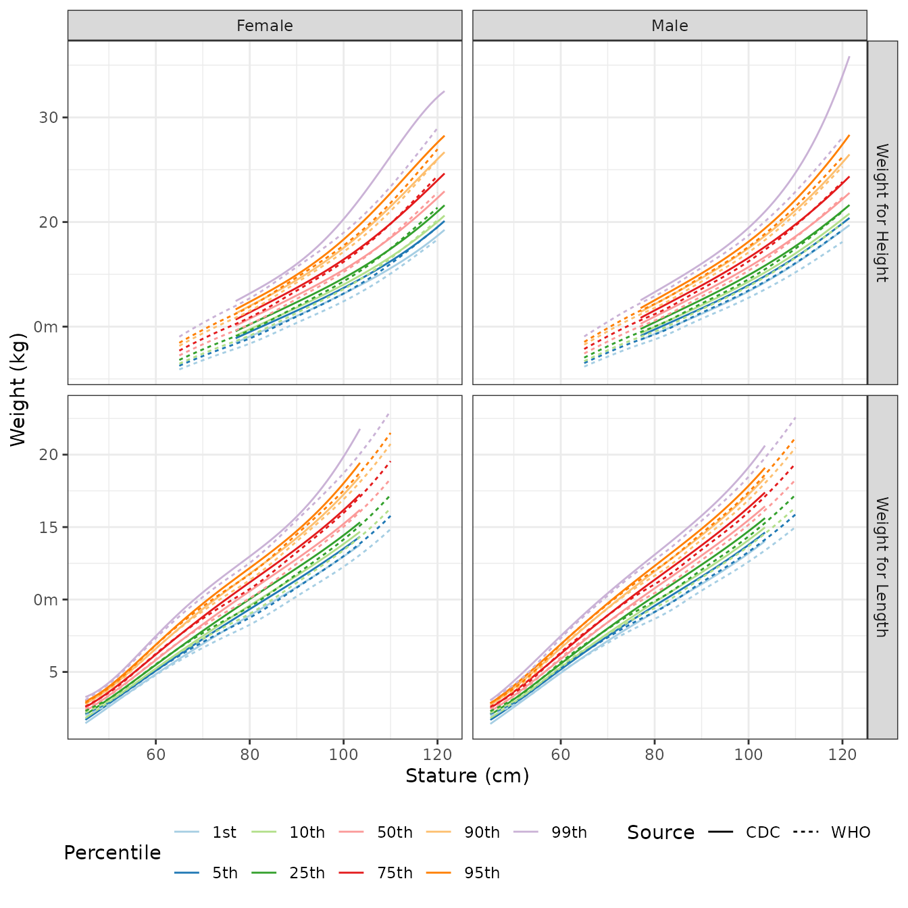

Growth Charts
Using the Percentile Data Files with LMS values provided by the CDC, and Child Growth Standards provided by the World Health Organization (WHO), we provide tools for finding quantiles, percentiles, or z-scores, for:
- BMI for age,
- head circumference for age,
- stature for age,
- weight for age, and 5, weight for stature.
All lengths/heights are in centimeters, ages in months, and weights in kilograms. Stature is used to refer both hegith and length; Specific methods are provided for each.
Method - LMS
All methods use the published LMS parameters to define z-scores, percentiles, and quantiles for skewed distributions. L is a \(\lambda\) parameter, the Box-Cox transformation power; \(M\) the median value, and \(S\) a generalized coefficient of variation. For a given percentile or z-score, the corresponding physical measurement, \(X,\) is defined as
\[X = \begin{cases} M \left(1 + \lambda S Z \right)^{\frac{1}{\lambda}} & \lambda \neq 0 \\ M \exp\left( S Z \right) & \lambda = 0. \end{cases}\]
From this we can get the z-score for a given measurement \(X:\)
\[ Z = \begin{cases} \frac{\left(\frac{X}{M}\right)^{\lambda} - 1}{\lambda S} & \lambda \neq 0 \\ \frac{\log\left(\frac{X}{M}\right) }{ S } & \lambda = 0. \end{cases}\]
Percentiles are determined using the standard normal distribution of z-scores.
For all eight of the noted methods we provide a distribution function, quantile function, and function that returns z-scores.
Growth Standards
All the growth standard functions have a quantile, percentile, and z-scores version.
BMI for Age

The median BMI quantile for a 48 month old female is:
q_bmi_for_age(p = 0.5, male = 0, age = 48) # default is CDC
## [1] 15.32168
q_bmi_for_age(p = 0.5, male = 0, age = 48, source = c("CDC", "WHO"))
## [1] 15.32168 15.26020A BMI of 17.2 for a 149 month old male is in the following percentiles by source:
p_bmi_for_age(q = 17.2, male = 1, age = 149, source = c("CDC", "WHO"))
## [1] 0.3533024 0.3787698If you would prefer to have the z-score for a BMI of 17.2 for a 149 month old male is in the following percentiles by source:
z_bmi_for_age(q = 17.2, male = 1, age = 149, source = c("CDC", "WHO"))
## [1] -0.3764197 -0.3087132Stature for Age
Stature is either height or length. Functions for both are provided.
The image below is the growth chart by data source and by height or length.

The following image shows the diffrence in the quantile values between height and length for the same age.

Legnth for Age
Length for age quantiles are found via q_length_for_age.
For example, the median length for a 1.5 year old male, based on CDC
data is:
q_length_for_age(p = 0.5, age = 1.5 * 12, male = 1, source = "CDC")
## [1] 81.44384A 90 cm long 28 month old female is in the 63th percentile:
p_length_for_age(q = 90, age = 28, male = 0, source = "CDC")
## [1] 0.628035or the equivalent z-score:
z_length_for_age(q = 90, age = 28, male = 0, source = "CDC")
## [1] 0.3266536Height for Age
Height for age quantiles are found via q_height_for_age.
For example, the median height for a 11 year old male, based on CDC data
is:
q_height_for_age(p = 0.5, age = 11 * 12, male = 1, source = "CDC")
## [1] 143.3107A 125 cm tall 108 month old female is in the 10th percentile:
p_height_for_age(q = 125, age = 108, male = 0, source = "CDC")
## [1] 0.1008541or the equivalent z-score:
z_height_for_age(q = 125, age = 108, male = 0, source = "CDC")
## [1] -1.2767Weight for Age

Find the 80th quantile for 56 month old females
q_weight_for_age(p = 0.80, age = 56, male = 0, source = c("CDC", "WHO"))
## [1] 19.38674 19.84028The percentiles for 42 kg 9 year old males:
p_weight_for_age(q = 42, age = 9 * 12, male = 0, source = c("CDC", "WHO"))
## [1] 0.9560441 0.9829831
z_weight_for_age(q = 42, age = 9 * 12, male = 0, source = c("CDC", "WHO"))
## [1] 1.706517 2.119670Weight for Stature

The 60th weight qualtile for a 1.2 meter tall male is
q_weight_for_height(p = 0.60, male = 1, height = 120, source = "CDC")
## [1] 22.4941
q_weight_for_height(p = 0.60, male = 1, height = 120, source = "WHO")
## [1] 22.89542There are slight differences in the quantiles for length and height
q_weight_for_length(p = 0.60, male = 1, length = 97, source = "CDC")
## [1] 14.88168
q_weight_for_height(p = 0.60, male = 1, height = 97, source = "WHO")
## [1] 14.85803
q_weight_for_length(p = 0.60, male = 1, length = 97, source = "CDC")
## [1] 14.88168
q_weight_for_length(p = 0.60, male = 1, length = 97, source = "WHO")
## [1] 14.6771Percentiles and standard scores for a 14 kg, 88 cm tall/long male
p_weight_for_height(q = 14, male = 1, height = 88, source = "CDC")
## [1] 0.9003879
p_weight_for_height(q = 14, male = 1, height = 88, source = "WHO")
## [1] 0.9285045
p_weight_for_length(q = 14, male = 1, length = 88, source = "CDC")
## [1] 0.9277451
p_weight_for_length(q = 14, male = 1, length = 88, source = "WHO")
## [1] 0.9479553Correseponding standard scores
z_weight_for_height(q = 14, male = 1, height = 88, source = "CDC")
## [1] 1.283765
z_weight_for_height(q = 14, male = 1, height = 88, source = "WHO")
## [1] 1.464743
z_weight_for_length(q = 14, male = 1, length = 88, source = "CDC")
## [1] 1.459201
z_weight_for_length(q = 14, male = 1, length = 88, source = "WHO")
## [1] 1.625343